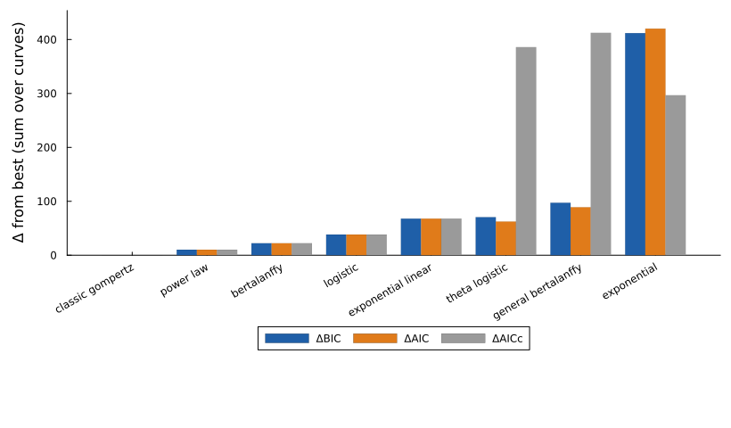
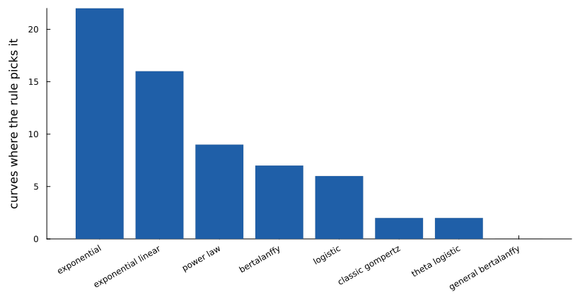
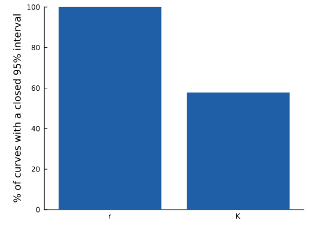
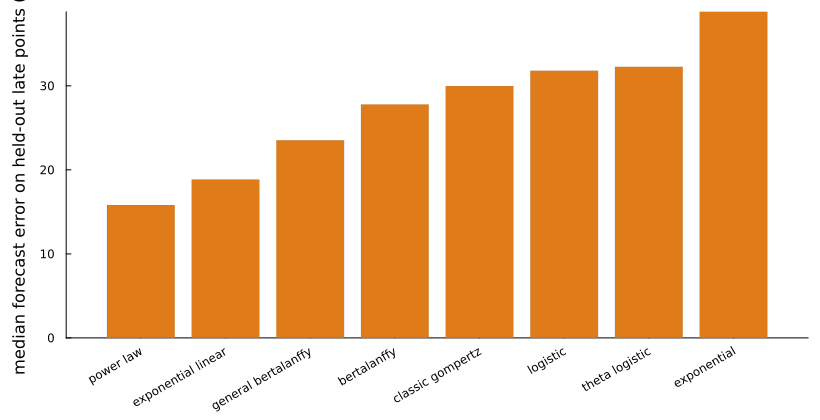

LM2-4LUC+ breast xenograft volumes (vehicle)
Benzekry S et al. (2014) PLoS Comput Biol 10(8):e1003800; data Zenodo 3574531 (Mastri, Tracz, Ebos) · doi:10.5281/zenodo.3574531 · source: https://doi.org/10.5281/zenodo.3574531 · licence: CC BY 4.0
Orthotopic LM2-4 breast tumours (a metastatic MDA-MB-231 derivative) in 64 mice, measured with calipers as volume (mm³). Benzekry and colleagues fitted the same panel of classic laws to these curves and found the Gompertz model described them best for its parameter count.
Same mice as the Ebos vehicle arm. Every row of this file matches the vehicle (untreated) arm of the Ebos sunitinib dataset, so the two are one experiment, not two. The showcase counts them once: this page covers the untreated curves and the Ebos page covers only the treated arms.
How this setup differs from the paper. Each curve starts from its own first measurement, the error model is the showcase's proportional one and selection uses the 2-BIC rule. With those choices the dataset-level pick is still Gompertz, which agrees with the paper. Per mouse the picture is more mixed: short curves often prefer exponential or exponential-linear growth, because a few points cannot show the slowing that Gompertz needs.
Model comparison
Each of the 64 curves was fitted separately with every model. Criteria are summed over curves and shown as differences from the best model. The rule picks the model with the fewest parameters within 2 BIC of the best: classic gompertz.
| Model | k | ΔBIC | ΔAIC | ΔAICc | Curves where picked |
|---|---|---|---|---|---|
| classic gompertz (pick) | 2 | 0.0 | 0.0 | 0.0 | 2 |
| power law | 2 | 10.2 | 10.2 | 10.2 | 9 |
| bertalanffy | 2 | 22.2 | 22.2 | 22.2 | 7 |
| logistic | 2 | 38.4 | 38.4 | 38.4 | 6 |
| exponential linear | 2 | 67.9 | 67.9 | 67.9 | 16 |
| theta logistic | 3 | 70.6 | 62.4 | 385.8 | 2 |
| general bertalanffy | 3 | 97.2 | 89.0 | 412.4 | 0 |
| exponential | 1 | 411.9 | 420.2 | 296.6 | 22 |



Identifiability of the pick
Profile likelihood on every curve (each parameter fixed on a grid, the others refitted; 95% cutoff χ²₁ = 3.84). A parameter counts as identifiable on a curve when its interval closes inside the bounds.
| Parameter | Median estimate | Curves identifiable (%) |
|---|---|---|
| r | 0.070 | 100 |
| K | 2640.454 | 58 |

Forecast check
Each model was refitted on the first 70% of each curve and asked to predict the rest.
| Model | Median relative error (%) | Predictions within 20% (%) |
|---|---|---|
| power law | 15.8 | 57.7 |
| exponential linear | 18.8 | 51.9 |
| general bertalanffy | 23.5 | 45.1 |
| bertalanffy | 27.8 | 40.1 |
| classic gompertz | 30.0 | 35.3 |
| logistic | 31.8 | 34.0 |
| theta logistic | 32.3 | 31.3 |
| exponential | 38.8 | 27.7 |

Reproduce
python3 -I showcase/data/prepare.py --only benzekry2014_lm24
julia --project=showcase -t auto showcase/run_pipeline.jl --only benzekry2014_lm24Fitted with GrowthParameterEstimation.jl 0.5.5. Results: showcase/results/benzekry2014_lm24/.